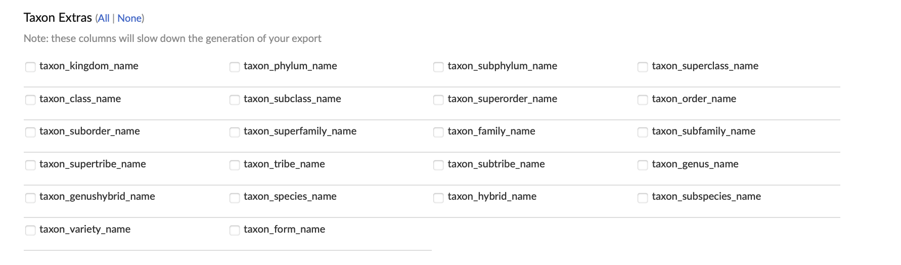
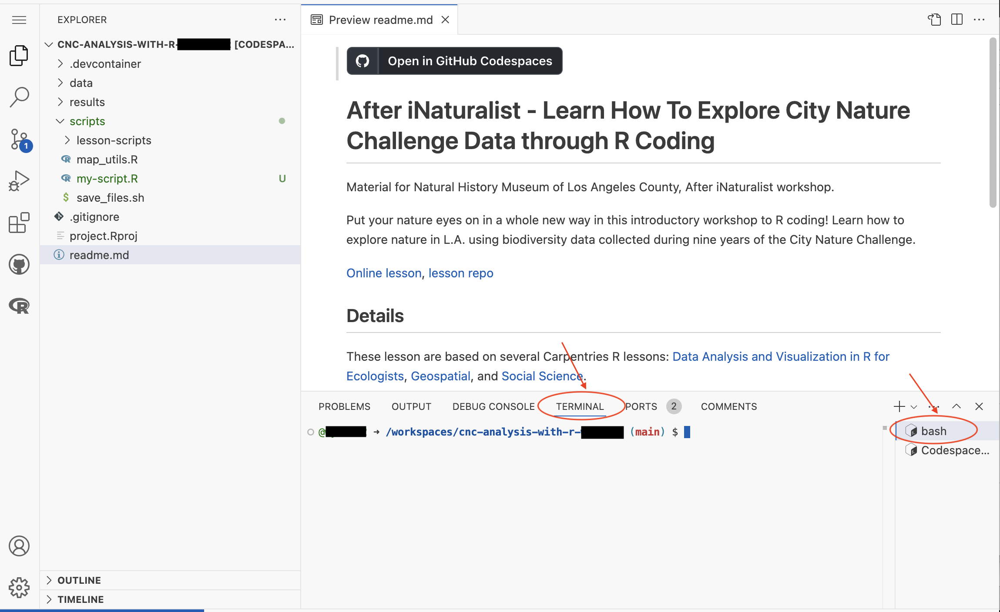
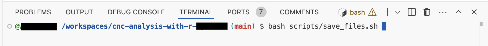

library(readr) # read and write tabular data
library(dplyr) # manipulate data
library(lubridate) # manipulate dates
library(here) # file pathsWorking with data
Questions
- How do you work with iNaturalist CSV data in R?
Objectives
- Import CSV data into R.
- Select rows and columns of data.frames.
- Use pipes to link steps together into pipelines.
- Create new data.frame columns using existing columns.
- Export data to a CSV file.
Exploring iNaturalist data
A CSV of iNaturalist observations for City Nature Challenge Los Angeles from 2015 to 2024 is located at “data/cleaned/cnc-los-angeles-observations.csv”. We are going to read that CSV using R.
File paths
When we reference other files from an R script, we need to give R precise instructions on where those files are. We do that using something called a file path.
There are two kinds of paths: absolute and relative. Absolute paths are specific to a particular computer, whereas relative paths are relative to a certain folder. Because we are using RStudio “project” feature, all of our paths is relative to the project folder. For instance an absolute path is “/Users/username/Documents/CNC-coding-workshop/data/cleaned/cnc-los-angeles-observations.csv”, and relative path is “data/cleaned/cnc-los-angeles-observations.csv”.
here is an R package that makes it easier to handle file paths.
Functions
Functions are predefined bits of code that do a specific task. Arguments are values that we pass into a function. Function usually takes one or more arguments as input, does something to the values, and produces the ouput.
R packages
R itself has many built-in functions, but we can access many more by installing and loading other packages of functions and data into R. We will use several R packages for the workshop.
To install these packages, use install.packages() function from R. We pass in the package names as arguments. The name of the packages must be in quotes.
install.packages("readr")R will connect to the internet and download packages from servers that have R packages. R will then install the packages on your computer. The console window will show you the progress of the installation process.
To save time, we have already installed all the packages we need for the workshop.
In order to use a package, use library() function from R to load the package. We pass in the name of the package as an argument. Do not use quotes around the package name when using library().
library(readr)Reading a CSV file
In order to analyze the iNaturalist csv, we need to load readr, lubridate and dplyr packages.
Generally it is a good idea to list all the libraries that you will use in the script at the beginning of the script. You want to install a package to your computer once, and then load it with library() in each script where you need to use it.
We call read_csv() function from readr, and pass in a relative path to a CSV file in order to load the CSV.
read_csv() will read the file and return the content of the file. In order for us access the content later on, we will assign the content to an object called inat_data.
inat_data <- read_csv(here('data/cleaned/cnc-los-angeles-observations.csv'))
Tip
Typing out paths can be error prone, so we can utilize a keyboard shortcut. Inside the parentheses of read_csv(), type out a pair of quotes and put your cursor between them. Then hit Tab. A small menu showing your folders and files should show up. You can use the ↑ and ↓ keys to move through the options, or start typing to narrow them down. You can hit Enter to select a file or folder, and hit Tab again to continue building the file path. This might take a bit of getting used to, but once you get the hang of it, it will speed up writing file paths and reduce the number of mistakes you make.
We can use the glimpse() function from dplyr get a summary about the contents of inat_data. It shows the number of rows and columns. For each column, it shows the name, data type (dbl, chr, lgl, date), and the first few values.
glimpse(inat_data)Rows: 191,638
Columns: 37
$ id <dbl> 2931940, 2934641, 2934961, 2934980, 2934994…
$ observed_on <date> 2016-04-14, 2016-04-14, 2016-04-14, 2016-0…
$ time_observed_at <chr> "2016-04-14 19:25:00 UTC", "2016-04-14 19:0…
$ user_id <dbl> 151043, 10814, 80445, 80445, 80445, 121033,…
$ user_login <chr> "msmorales", "smartrf", "cdegroof", "cdegro…
$ user_name <chr> "Michael Morales", "Richard Smart (he, him)…
$ created_at <chr> "2016-04-14 07:28:36 UTC", "2016-04-14 19:0…
$ updated_at <chr> "2021-12-26 06:58:04 UTC", "2018-05-28 02:0…
$ quality_grade <chr> "research", "needs_id", "research", "resear…
$ license <chr> "CC-BY", "CC-BY-NC", NA, NA, NA, "CC-BY-NC"…
$ url <chr> "http://www.inaturalist.org/observations/29…
$ image_url <chr> "https://inaturalist-open-data.s3.amazonaws…
$ sound_url <chr> NA, NA, NA, NA, NA, NA, NA, NA, NA, NA, NA,…
$ tag_list <chr> NA, NA, NA, NA, NA, NA, NA, NA, NA, NA, NA,…
$ description <chr> "Spotted on a the wall of a planter, while …
$ captive_cultivated <lgl> FALSE, FALSE, FALSE, FALSE, FALSE, FALSE, F…
$ latitude <dbl> 34.05829, 34.01742, 34.13020, 34.13143, 34.…
$ longitude <dbl> -117.8219, -118.2892, -118.8226, -118.8215,…
$ positional_accuracy <dbl> 4, 5, NA, NA, NA, NA, 17, 55, 55, 55, NA, 5…
$ public_positional_accuracy <dbl> 4, 5, NA, NA, NA, NA, 17, 55, 55, 55, NA, 5…
$ geoprivacy <chr> NA, NA, NA, NA, NA, NA, NA, NA, NA, NA, NA,…
$ taxon_geoprivacy <chr> NA, NA, NA, "open", "open", NA, "open", NA,…
$ coordinates_obscured <lgl> FALSE, FALSE, FALSE, FALSE, FALSE, FALSE, F…
$ scientific_name <chr> "Cornu aspersum", "Oestroidea", "Arphia ram…
$ common_name <chr> "Garden Snail", "Bot Flies, Blow Flies, and…
$ iconic_taxon_name <chr> "Mollusca", "Insecta", "Insecta", "Reptilia…
$ taxon_id <dbl> 480298, 356157, 54247, 36100, 36204, 69731,…
$ taxon_kingdom_name <chr> "Animalia", "Animalia", "Animalia", "Animal…
$ taxon_phylum_name <chr> "Mollusca", "Arthropoda", "Arthropoda", "Ch…
$ taxon_class_name <chr> "Gastropoda", "Insecta", "Insecta", "Reptil…
$ taxon_order_name <chr> "Stylommatophora", "Diptera", "Orthoptera",…
$ taxon_family_name <chr> "Helicidae", NA, "Acrididae", "Phrynosomati…
$ taxon_genus_name <chr> "Cornu", NA, "Arphia", "Uta", "Sceloporus",…
$ taxon_species_name <chr> "Cornu aspersum", NA, "Arphia ramona", "Uta…
$ taxon_subspecies_name <chr> NA, NA, NA, "Uta stansburiana elegans", NA,…
$ threatened <lgl> NA, NA, NA, NA, NA, NA, NA, NA, NA, NA, NA,…
$ establishment_means <chr> "introduced", NA, "native", "native", "nati…We can view the first few rows with the head() function, and the last few rows with the tail()function:
head(inat_data)# A tibble: 6 × 37
id observed_on time_observed_at user_id user_login user_name created_at
<dbl> <date> <chr> <dbl> <chr> <chr> <chr>
1 2931940 2016-04-14 2016-04-14 19:25:… 151043 msmorales Michael … 2016-04-1…
2 2934641 2016-04-14 2016-04-14 19:02:… 10814 smartrf Richard … 2016-04-1…
3 2934961 2016-04-14 2016-04-14 19:15:… 80445 cdegroof Chris De… 2016-04-1…
4 2934980 2016-04-14 2016-04-14 19:18:… 80445 cdegroof Chris De… 2016-04-1…
5 2934994 2016-04-14 2016-04-14 19:19:… 80445 cdegroof Chris De… 2016-04-1…
6 2935037 2016-04-14 2016-04-14 19:36:… 121033 ttempel <NA> 2016-04-1…
# ℹ 30 more variables: updated_at <chr>, quality_grade <chr>, license <chr>,
# url <chr>, image_url <chr>, sound_url <chr>, tag_list <chr>,
# description <chr>, captive_cultivated <lgl>, latitude <dbl>,
# longitude <dbl>, positional_accuracy <dbl>,
# public_positional_accuracy <dbl>, geoprivacy <chr>, taxon_geoprivacy <chr>,
# coordinates_obscured <lgl>, scientific_name <chr>, common_name <chr>,
# iconic_taxon_name <chr>, taxon_id <dbl>, taxon_kingdom_name <chr>, …tail(inat_data)# A tibble: 6 × 37
id observed_on time_observed_at user_id user_login user_name created_at
<dbl> <date> <chr> <dbl> <chr> <chr> <chr>
1 254128969 2024-04-28 2024-04-28 17:1… 2834615 thannavic… Thanna V… 2024-12-0…
2 255041807 2024-04-26 2024-04-26 23:3… 5347031 epiphyte78 <NA> 2024-12-1…
3 255041881 2024-04-26 2024-04-26 22:1… 5347031 epiphyte78 <NA> 2024-12-1…
4 255041985 2024-04-26 2024-04-26 22:1… 5347031 epiphyte78 <NA> 2024-12-1…
5 255042063 2024-04-26 2024-04-26 20:4… 5347031 epiphyte78 <NA> 2024-12-1…
6 255042124 2024-04-26 2024-04-26 19:1… 5347031 epiphyte78 <NA> 2024-12-1…
# ℹ 30 more variables: updated_at <chr>, quality_grade <chr>, license <chr>,
# url <chr>, image_url <chr>, sound_url <chr>, tag_list <chr>,
# description <chr>, captive_cultivated <lgl>, latitude <dbl>,
# longitude <dbl>, positional_accuracy <dbl>,
# public_positional_accuracy <dbl>, geoprivacy <chr>, taxon_geoprivacy <chr>,
# coordinates_obscured <lgl>, scientific_name <chr>, common_name <chr>,
# iconic_taxon_name <chr>, taxon_id <dbl>, taxon_kingdom_name <chr>, …You can use View() function from R to open an interactive viewer, which behaves like a simplified version of a spreadsheet program. If you hover over the tab for the interactive View(), you can click the “x” that appears, which will close the tab.
View(inat_data)You can use names() from R to see the fields in the data frame.
names(inat_data) [1] "id" "observed_on"
[3] "time_observed_at" "user_id"
[5] "user_login" "user_name"
[7] "created_at" "updated_at"
[9] "quality_grade" "license"
[11] "url" "image_url"
[13] "sound_url" "tag_list"
[15] "description" "captive_cultivated"
[17] "latitude" "longitude"
[19] "positional_accuracy" "public_positional_accuracy"
[21] "geoprivacy" "taxon_geoprivacy"
[23] "coordinates_obscured" "scientific_name"
[25] "common_name" "iconic_taxon_name"
[27] "taxon_id" "taxon_kingdom_name"
[29] "taxon_phylum_name" "taxon_class_name"
[31] "taxon_order_name" "taxon_family_name"
[33] "taxon_genus_name" "taxon_species_name"
[35] "taxon_subspecies_name" "threatened"
[37] "establishment_means" We can use dim() function from R to get the dimension of a data frame.
dim(inat_data)[1] 191638 37inat_data has over 193K rows and 37 columns.
More about functions
To learn more about a function, you can type a ? in front of the name of the function, which will bring up the official documentation for that function:
?headFunction documentation is written by the authors of the functions, so they can vary pretty widely in their style and readability. The first section, Description, gives you a concise description of what the function does, but it may not always be enough. The Arguments section defines all the arguments for the function and is usually worth reading thoroughly. Finally, the Examples section at the end will often have some helpful examples that you can run to get a sense of what the function is doing.
The help Arguments section for head() shows four arguments. The first argument x is required, the rest are optional. For example, the n argument in head() specifies the number of rows to print. It defaults to 6, but we can override that by specifying a different number:
head(x = inat_data, n = 10)# A tibble: 10 × 37
id observed_on time_observed_at user_id user_login user_name created_at
<dbl> <date> <chr> <dbl> <chr> <chr> <chr>
1 2931940 2016-04-14 2016-04-14 19:25… 151043 msmorales Michael … 2016-04-1…
2 2934641 2016-04-14 2016-04-14 19:02… 10814 smartrf Richard … 2016-04-1…
3 2934961 2016-04-14 2016-04-14 19:15… 80445 cdegroof Chris De… 2016-04-1…
4 2934980 2016-04-14 2016-04-14 19:18… 80445 cdegroof Chris De… 2016-04-1…
5 2934994 2016-04-14 2016-04-14 19:19… 80445 cdegroof Chris De… 2016-04-1…
6 2935037 2016-04-14 2016-04-14 19:36… 121033 ttempel <NA> 2016-04-1…
7 2935117 2016-04-15 <NA> 76855 bradrumble <NA> 2016-04-1…
8 2935139 2016-04-14 <NA> 216108 deedeeflo… <NA> 2016-04-1…
9 2935176 2016-04-14 <NA> 216108 deedeeflo… <NA> 2016-04-1…
10 2935181 2016-04-14 <NA> 216108 deedeeflo… <NA> 2016-04-1…
# ℹ 30 more variables: updated_at <chr>, quality_grade <chr>, license <chr>,
# url <chr>, image_url <chr>, sound_url <chr>, tag_list <chr>,
# description <chr>, captive_cultivated <lgl>, latitude <dbl>,
# longitude <dbl>, positional_accuracy <dbl>,
# public_positional_accuracy <dbl>, geoprivacy <chr>, taxon_geoprivacy <chr>,
# coordinates_obscured <lgl>, scientific_name <chr>, common_name <chr>,
# iconic_taxon_name <chr>, taxon_id <dbl>, taxon_kingdom_name <chr>, …If we order the argument the same order they are listed in help Arguments section, we don’t have to name them:
head(inat_data, 10)# A tibble: 10 × 37
id observed_on time_observed_at user_id user_login user_name created_at
<dbl> <date> <chr> <dbl> <chr> <chr> <chr>
1 2931940 2016-04-14 2016-04-14 19:25… 151043 msmorales Michael … 2016-04-1…
2 2934641 2016-04-14 2016-04-14 19:02… 10814 smartrf Richard … 2016-04-1…
3 2934961 2016-04-14 2016-04-14 19:15… 80445 cdegroof Chris De… 2016-04-1…
4 2934980 2016-04-14 2016-04-14 19:18… 80445 cdegroof Chris De… 2016-04-1…
5 2934994 2016-04-14 2016-04-14 19:19… 80445 cdegroof Chris De… 2016-04-1…
6 2935037 2016-04-14 2016-04-14 19:36… 121033 ttempel <NA> 2016-04-1…
7 2935117 2016-04-15 <NA> 76855 bradrumble <NA> 2016-04-1…
8 2935139 2016-04-14 <NA> 216108 deedeeflo… <NA> 2016-04-1…
9 2935176 2016-04-14 <NA> 216108 deedeeflo… <NA> 2016-04-1…
10 2935181 2016-04-14 <NA> 216108 deedeeflo… <NA> 2016-04-1…
# ℹ 30 more variables: updated_at <chr>, quality_grade <chr>, license <chr>,
# url <chr>, image_url <chr>, sound_url <chr>, tag_list <chr>,
# description <chr>, captive_cultivated <lgl>, latitude <dbl>,
# longitude <dbl>, positional_accuracy <dbl>,
# public_positional_accuracy <dbl>, geoprivacy <chr>, taxon_geoprivacy <chr>,
# coordinates_obscured <lgl>, scientific_name <chr>, common_name <chr>,
# iconic_taxon_name <chr>, taxon_id <dbl>, taxon_kingdom_name <chr>, …Additionally, if we name them, we can put them in any order we want:
head(n = 10, x = inat_data)# A tibble: 10 × 37
id observed_on time_observed_at user_id user_login user_name created_at
<dbl> <date> <chr> <dbl> <chr> <chr> <chr>
1 2931940 2016-04-14 2016-04-14 19:25… 151043 msmorales Michael … 2016-04-1…
2 2934641 2016-04-14 2016-04-14 19:02… 10814 smartrf Richard … 2016-04-1…
3 2934961 2016-04-14 2016-04-14 19:15… 80445 cdegroof Chris De… 2016-04-1…
4 2934980 2016-04-14 2016-04-14 19:18… 80445 cdegroof Chris De… 2016-04-1…
5 2934994 2016-04-14 2016-04-14 19:19… 80445 cdegroof Chris De… 2016-04-1…
6 2935037 2016-04-14 2016-04-14 19:36… 121033 ttempel <NA> 2016-04-1…
7 2935117 2016-04-15 <NA> 76855 bradrumble <NA> 2016-04-1…
8 2935139 2016-04-14 <NA> 216108 deedeeflo… <NA> 2016-04-1…
9 2935176 2016-04-14 <NA> 216108 deedeeflo… <NA> 2016-04-1…
10 2935181 2016-04-14 <NA> 216108 deedeeflo… <NA> 2016-04-1…
# ℹ 30 more variables: updated_at <chr>, quality_grade <chr>, license <chr>,
# url <chr>, image_url <chr>, sound_url <chr>, tag_list <chr>,
# description <chr>, captive_cultivated <lgl>, latitude <dbl>,
# longitude <dbl>, positional_accuracy <dbl>,
# public_positional_accuracy <dbl>, geoprivacy <chr>, taxon_geoprivacy <chr>,
# coordinates_obscured <lgl>, scientific_name <chr>, common_name <chr>,
# iconic_taxon_name <chr>, taxon_id <dbl>, taxon_kingdom_name <chr>, …Manipulating data
One of the most important skills for working with data in R is the ability to manipulate, modify, and reshape data. The dplyr package provide a series of powerful functions for many common data manipulation tasks.
select()
The select() function is used to select certain columns of a data frame. The first argument is the data frame, and the rest of the arguments are unquoted names of the columns you want.
Our inat_data data frame has 37 columns. We want four columns: user_login, common_name, scientific_name, observed_on.
select(inat_data, user_login, common_name, scientific_name, observed_on)# A tibble: 191,638 × 4
user_login common_name scientific_name observed_on
<chr> <chr> <chr> <date>
1 msmorales Garden Snail Cornu aspersum 2016-04-14
2 smartrf Bot Flies, Blow Flies, and Allies Oestroidea 2016-04-14
3 cdegroof California Orange-winged Grasshopp… Arphia ramona 2016-04-14
4 cdegroof Western Side-blotched Lizard Uta stansburia… 2016-04-14
5 cdegroof Western Fence Lizard Sceloporus occ… 2016-04-14
6 ttempel <NA> Coelocnemis 2016-04-14
7 bradrumble House Sparrow Passer domesti… 2016-04-15
8 deedeeflower5 Amur Carp Cyprinus rubro… 2016-04-14
9 deedeeflower5 Red-eared Slider Trachemys scri… 2016-04-14
10 deedeeflower5 Mallard Anas platyrhyn… 2016-04-14
# ℹ 191,628 more rowsselect() creates a new data frame with 193K rows, and 4 columns.
filter()
The filter() function is used to select rows that match certain criteria. The first argument is the name of the data frame, and the second argument is the selection criteria.
select observations by common_name
Let’s find all the observations for ‘Western Fence Lizard’, the most popular species in CNC Los Angeles. We want all the rows where common_name is equal to ‘Western Fence Lizard’. Use == to test for equality.
filter(inat_data, common_name == 'Western Fence Lizard')# A tibble: 3,339 × 37
id observed_on time_observed_at user_id user_login user_name created_at
<dbl> <date> <chr> <dbl> <chr> <chr> <chr>
1 2934994 2016-04-14 2016-04-14 19:19… 80445 cdegroof Chris De… 2016-04-1…
2 2935263 2016-04-14 <NA> 216108 deedeeflo… <NA> 2016-04-1…
3 2935420 2016-04-14 <NA> 216108 deedeeflo… <NA> 2016-04-1…
4 2935748 2016-04-14 2016-04-14 21:01… 80445 cdegroof Chris De… 2016-04-1…
5 2935965 2016-04-14 2016-04-14 19:44… 171443 lchroman <NA> 2016-04-1…
6 2938607 2016-04-14 2016-04-14 23:33… 146517 maiz <NA> 2016-04-1…
7 2940103 2016-04-15 2016-04-15 16:31… 80984 kimssight Kim Moore 2016-04-1…
8 2940838 2016-04-15 2016-04-15 17:11… 201119 sarahwenn… <NA> 2016-04-1…
9 2940848 2016-04-15 2016-04-15 17:17… 201119 sarahwenn… <NA> 2016-04-1…
10 2940855 2016-04-15 2016-04-15 17:42… 201119 sarahwenn… <NA> 2016-04-1…
# ℹ 3,329 more rows
# ℹ 30 more variables: updated_at <chr>, quality_grade <chr>, license <chr>,
# url <chr>, image_url <chr>, sound_url <chr>, tag_list <chr>,
# description <chr>, captive_cultivated <lgl>, latitude <dbl>,
# longitude <dbl>, positional_accuracy <dbl>,
# public_positional_accuracy <dbl>, geoprivacy <chr>, taxon_geoprivacy <chr>,
# coordinates_obscured <lgl>, scientific_name <chr>, common_name <chr>, …filter() creates a new data frame with over 3000 rows, and 37 columns.
The pipe: %>%
What happens if we want to select columns and filter rows?
We use the pipe operator %>% to call multiple functions.
Tip
You can insert %>% by using the keyboard shortcut Shift+Cmd+M (Mac) or Shift+Ctrl+M (Windows).
select observations by user_login
Let’s get all observations for iNaturalist user ‘natureinla’, and we only want columns user_login, common_name, scientific_name, observed_on.
inat_data %>%
filter(user_login == 'natureinla') %>%
select(user_login, common_name, scientific_name, observed_on)# A tibble: 2,956 × 4
user_login common_name scientific_name observed_on
<chr> <chr> <chr> <date>
1 natureinla Red-eared Slider Trachemys scripta elegans 2016-04-14
2 natureinla Monarch Danaus plexippus 2016-04-14
3 natureinla San Diego Gopher Snake Pituophis catenifer annectens 2016-04-14
4 natureinla California Towhee Melozone crissalis 2016-04-14
5 natureinla Cooper's Hawk Astur cooperii 2016-04-14
6 natureinla Monarch Danaus plexippus 2016-04-14
7 natureinla tropical milkweed Asclepias curassavica 2016-04-14
8 natureinla Allen's Hummingbird Selasphorus sasin 2016-04-14
9 natureinla Northern Mockingbird Mimus polyglottos 2016-04-15
10 natureinla House Sparrow Passer domesticus 2016-04-15
# ℹ 2,946 more rowsPipe operator take the thing on the left hand side and insert it as the first argument of the function on the right hand side. It can be helpful to think of %>% as meaning “and then”. inat_data is sent to filter() function. filter() selects rows with ‘natureinla’. Then output from filter() is sent into the select() function. select() selects 4 columns.
select observations by coordinates_obscured
Sometimes the coordinates for iNaturalist observations are obscured. For instance, when the observation involves an endangered species, iNaturalist will automatically obscure the coordinates in order to protect the species. Sometimes people choose to obscure their location when they are making observations so that other people will not know their exact location. iNaturalist has information about obscured coordinates.
To access one column in a data frame, use dataframe$column_name. When we pass in a data frame column to table() function from R, it will return the unique values in a column, and the number of rows that contain each value.
Use table() to get a count of how many observations have obscured locations by passing in the data frame column.
table(inat_data$coordinates_obscured)
FALSE TRUE
176942 14696 176K row are false (coordinates are normal), 14K rows are true (coordinates are obscured).
If the exact location of the observation will affect your analysis, then you want unobscured coordinates. Let’s get the observations where the coordinates are not obscured.
inat_data %>%
filter(coordinates_obscured == FALSE) %>%
select(user_login, common_name, scientific_name, observed_on)# A tibble: 176,942 × 4
user_login common_name scientific_name observed_on
<chr> <chr> <chr> <date>
1 msmorales Garden Snail Cornu aspersum 2016-04-14
2 smartrf Bot Flies, Blow Flies, and Allies Oestroidea 2016-04-14
3 cdegroof California Orange-winged Grasshopp… Arphia ramona 2016-04-14
4 cdegroof Western Side-blotched Lizard Uta stansburia… 2016-04-14
5 cdegroof Western Fence Lizard Sceloporus occ… 2016-04-14
6 ttempel <NA> Coelocnemis 2016-04-14
7 bradrumble House Sparrow Passer domesti… 2016-04-15
8 deedeeflower5 Amur Carp Cyprinus rubro… 2016-04-14
9 deedeeflower5 Red-eared Slider Trachemys scri… 2016-04-14
10 deedeeflower5 Mallard Anas platyrhyn… 2016-04-14
# ℹ 176,932 more rows
Tip
When using both filter() and select(), it is a good idea to use filter() before select(). The following code will cause an error “object ‘coordinates_obscured’ not found”.
inat_data %>%
select(user_login, common_name, scientific_name, observed_on) %>%
filter(coordinates_obscured == FALSE)select() creates a data frame with four fields. When we try to filter() using coordinates_obscured, we get an error because the 4-field data frame we pass to filter() does not have the field coordinates_obscured.
select observations by quality_grade
iNaturalist gives a quality grade to each observation.
To see all the unique values for a column, use unique() function from R and pass in the data frame column.
unique(inat_data$quality_grade)[1] "research" "needs_id" "casual" When researchers use iNaturalist data, they normally use research grade observations. Let’s get the observations that are research grade.
inat_data %>%
filter(quality_grade == 'research') %>%
select(user_login, common_name, scientific_name, observed_on)# A tibble: 107,491 × 4
user_login common_name scientific_name observed_on
<chr> <chr> <chr> <date>
1 msmorales Garden Snail Cornu aspersum 2016-04-14
2 cdegroof California Orange-winged Grasshopp… Arphia ramona 2016-04-14
3 cdegroof Western Side-blotched Lizard Uta stansburia… 2016-04-14
4 cdegroof Western Fence Lizard Sceloporus occ… 2016-04-14
5 deedeeflower5 Red-eared Slider Trachemys scri… 2016-04-14
6 deedeeflower5 Mallard Anas platyrhyn… 2016-04-14
7 lchroman Cactus Wren Campylorhynchu… 2016-04-14
8 deedeeflower5 Desert Cottontail Sylvilagus aud… 2016-04-14
9 deedeeflower5 Western Fence Lizard Sceloporus occ… 2016-04-14
10 deedeeflower5 Eastern Fox Squirrel Sciurus niger 2016-04-14
# ℹ 107,481 more rowsErrors in code
We are writing instructions for the computer. If there is a typo, misspelling, wrong function arguments, etc, the code will not work and we will see errors. R will display the errors in red. You need to fix the errors in order for the code to work. Here are some example errors.
typo: we used %>, when it should be %>%
inat_data %>
select(user_login, observed_on, common_name)Misspelled user_logi
inat_data %>%
select(user_logi, observed_on, common_name)typo: we use =, when it should be ==
inat_data %>%
filter(user_login = 'natureinla')typo: extra )
inat_data %>%
select(user_login, observed_on, common_name))Exercise 1
Get all your City Nature Challenge observations.
- Use
read_csv()to load the CNC CSV. - Use
filter()to select observations with your iNaturalist username. If you don’t have any CNC observations, use ‘quantron’ the most prolific community scientist for CNC Los Angeles. - Use
select()to select 4 columns. One of the columns should becommon_name - assign the results to
my_obsobject - click on
my_obsin the Environment tab to see the results
my_inat_data <- read_csv(here('data/cleaned/cnc-los-angeles-observations.csv'))Rows: 191638 Columns: 37
── Column specification ────────────────────────────────────────────────────────
Delimiter: ","
chr (26): time_observed_at, user_login, user_name, created_at, updated_at, ...
dbl (7): id, user_id, latitude, longitude, positional_accuracy, public_pos...
lgl (3): captive_cultivated, coordinates_obscured, threatened
date (1): observed_on
ℹ Use `spec()` to retrieve the full column specification for this data.
ℹ Specify the column types or set `show_col_types = FALSE` to quiet this message.my_obs <- my_inat_data %>%
filter(user_login == 'natureinla') %>%
select(user_login, observed_on, common_name, scientific_name)Logical operators
In previous examples we used one criteria in filter() to select some rows. Often times we want to use multiple criteria to select some rows. Logical operators allow you to do multiple comparisons at once.
and operator: &
If there are multiple criteria, and we want to get rows that match all of the criteria, we use and operator & in between the criteria.
condtion_1 & condition_2
select observations by common_name and quality_grade
Let’s get all ‘Western Fence Lizard’ observations that are research grade. This means we want to get rows where common_name is ‘Western Fence Lizard’ and quality_grade is ‘research’.
my_data <- inat_data %>%
filter(common_name == 'Western Fence Lizard' &
quality_grade == 'research') %>%
select(user_login, common_name, scientific_name, observed_on, quality_grade)We can check the results to make sure we wrote we got the data we want. We can use unique() to check the column values.
unique(my_data$common_name)[1] "Western Fence Lizard"unique(my_data$quality_grade)[1] "research"select observations by coordinates_obscured and positional_accuracy
Previously we looked at coordinates_obscured. In addition to coordinates being intentionally obscured, another thing that can affect the coordinates for an observation is the accuracy of the coordinates. The accuracy of GPS on smart phones depends on the hardware, software, physical environment, etc. The positional_accuracy from iNaturalist measures the coordinates error in meters. For example if an observation has a positional accuracy of 65 meters, this means the measured coordinates is within 65 meters from the actual coordinates.
When given a vector of numbers, summary() displays statistics about the values. Let’s use summary() to look at the positional accuracy of observations where the coordinates are not obscured.
my_data <- inat_data %>%
filter(coordinates_obscured == FALSE)
summary(my_data$positional_accuracy) Min. 1st Qu. Median Mean 3rd Qu. Max. NA's
0 5 12 2070 65 13227987 36601 Min. means the minimal value is 0.
1st Qu. means 25% of the values are less than 5, and 75% are greater than 5.
Median means 50% of the values are less than 12, 50% are greater than 12.
Mean is the sum of the values divided by number of items.
3rd Qu. means 75% of the values are less than 65, and 25% are greater than 65.
Max. means the maximum value is 13,227,987.
NA’s means there are 36,601 rows without positional_accuracy.
Even though we selected unobscured locations, 25% of the observations are 65 or more meters away the actual location due to the accuracy of GPS device.
If location accuracy is important to your analysis, you can select a small number for position accuracy. Let’s get observations with unobscured locations that have position accuracy less than 5 meters.
my_data <- inat_data %>%
filter(coordinates_obscured == FALSE &
positional_accuracy <= 5) %>%
select(user_login, common_name, scientific_name, positional_accuracy, coordinates_obscured)
my_data# A tibble: 41,417 × 5
user_login common_name scientific_name positional_accuracy
<chr> <chr> <chr> <dbl>
1 msmorales Garden Snail Cornu aspersum 4
2 smartrf Bot Flies, Blow Flies, and … Oestroidea 5
3 dnetburn tree houseleeks Aeonium 5
4 dnetburn London Plane Platanus × his… 5
5 dnetburn Fortnight Lilies Dietes 5
6 surya_poonam crimson clover Trifolium inca… 5
7 bigpinkhair Garden Snail Cornu aspersum 5
8 bradrumble Great Blue Heron Ardea herodias 5
9 bradrumble Spotted Sandpiper Actitis macula… 5
10 bradrumble Double-crested Cormorant Nannopterum au… 5
# ℹ 41,407 more rows
# ℹ 1 more variable: coordinates_obscured <lgl>We have 41K observations with position accuracy less than 5 meters.
unique(my_data$coordinates_obscured)[1] FALSEunique(my_data$positional_accuracy)[1] 4 5 3 2 1 0or operator: |
If there are multiple criteria, and we want to get rows that match one or more of the criteria, we use or operator | in between the criteria.
condition_1 | condition_2
select observations by multiple common_name
Let’s get observations where common_name is ‘Western Fence Lizard’ or ‘Western Honey Bee’.
my_data <- inat_data %>%
filter(common_name == 'Western Honey Bee' | common_name == 'Western Fence Lizard') %>%
select(user_login, observed_on, common_name)
dim(my_data)[1] 5399 3unique(my_data$common_name)[1] "Western Fence Lizard" "Western Honey Bee" %in% c()
Another way to get rows that match one or more of the criteria is with the in operator %in%.
Note
A vector is way R stores multiple values. c() combine function from R creates a vector with the passed in values.
c(1, 2, 5)[1] 1 2 5%in% operator from R returns true if an item matches values in a given vector.
1 %in% c(1, 2, 5)[1] TRUE3 %in% c(1, 2, 5)[1] FALSEselect observations by multiple license
iNaturalist observations, photos, and sounds are covered by licenses. The default license is CC BY-NC (Creative Commons: Attribution-NonCommercial) so other people can use the content if they give attribution to you and use it for non-commercial purposes. iNaturalist exports observations with No Copyright (CC0), Attribution (CC BY), and Attribution-NonCommercial (CC BY-NC) license to Global Biodiversity Information Facility (GBIF), an international organization that provides access to biodiversity information. Many researchers who use iNaturalist data get their data from GBIF. More info about iNaturalist licenses. This means if iNaturalist observers want their data to be used by scientists, they need to use one of those three licenses.
We can use table() to see the license types and count.
table(inat_data$license)
CC-BY CC-BY-NC CC-BY-NC-ND CC-BY-NC-SA CC-BY-ND CC-BY-SA
5384 129677 1199 2934 35 79
CC0
4934 Let’s get observations with CC0, CC-BY, or CC-BY-NC license. filter(license %in% c('CC0', 'CC-BY', 'CC-BY-NC')) will return rows where the license field is in the vector (‘CC0’, ‘CC-BY’, ‘CC-BY-NC’)
my_data <- inat_data %>%
filter(license %in% c('CC0', 'CC-BY', 'CC-BY-NC')) %>%
select(user_login, observed_on, common_name, license)
dim(my_data)[1] 139995 4unique(my_data$license)[1] "CC-BY" "CC-BY-NC" "CC0" & (and) versus | (or)
& (and) return rows where all conditions are true. This code looks for observations where user_login is ‘natureinla’ and common_name is ‘Western Fence Lizard’.
and_data <- inat_data %>%
filter(user_login == 'natureinla' &
common_name == 'Western Fence Lizard')
dim(and_data)[1] 79 37unique(and_data$user_login)[1] "natureinla"unique(and_data$common_name)[1] "Western Fence Lizard"We get 79 rows with 1 user_login and 1 common_name
| (or) returns rows where any conditions are true. This code looks for observations where user_login is ‘natureinla’ plus observations where common_name is ‘Western Fence Lizard’
or_data <- inat_data %>%
filter(user_login == 'natureinla' |
common_name == 'Western Fence Lizard')
dim(or_data)[1] 6216 37unique(or_data$user_login) %>% length[1] 1052unique(or_data$common_name) %>% length[1] 1031We get 6,216 rows with 1052 user_login and 1031 common_name
& vs | will return different results. Check the results of your code to make sure your results matches what you intended.
Exercise 2
Get all your observations that are research grade
- use
my_inat_datafrom Exercise 1 to access CNC observations - Use
&withfilter()since we want to pick observations by both username and quality grade - Use
select()to pick 4 columns
my_inat_data %>%
filter(user_login == 'natureinla' &
quality_grade == 'research') %>%
select(user_login, observed_on, common_name, scientific_name)# A tibble: 1,556 × 4
user_login observed_on common_name scientific_name
<chr> <date> <chr> <chr>
1 natureinla 2016-04-14 Red-eared Slider Trachemys scripta elegans
2 natureinla 2016-04-14 Monarch Danaus plexippus
3 natureinla 2016-04-14 San Diego Gopher Snake Pituophis catenifer annectens
4 natureinla 2016-04-14 California Towhee Melozone crissalis
5 natureinla 2016-04-14 Cooper's Hawk Astur cooperii
6 natureinla 2016-04-14 Monarch Danaus plexippus
7 natureinla 2016-04-14 Allen's Hummingbird Selasphorus sasin
8 natureinla 2016-04-15 Northern Mockingbird Mimus polyglottos
9 natureinla 2016-04-15 House Sparrow Passer domesticus
10 natureinla 2016-04-15 Indian Peafowl Pavo cristatus
# ℹ 1,546 more rowsMore complex queries
Sometimes we want to use both & | to select the rows. You can use multiple filter() statements. Multiple filter() is the equivalent of &.
select observations by multiple user_login and common_name
Let’s get observations where user is ‘cdegroof’ or ‘deedeeflower5’, and species is ‘Western Fence Lizard’.
complex_query <- inat_data %>%
filter(user_login == 'cdegroof' |
user_login == 'deedeeflower5') %>%
filter(common_name == 'Western Fence Lizard') %>%
select(user_login, common_name, scientific_name, observed_on)
complex_query# A tibble: 33 × 4
user_login common_name scientific_name observed_on
<chr> <chr> <chr> <date>
1 cdegroof Western Fence Lizard Sceloporus occidentalis 2016-04-14
2 deedeeflower5 Western Fence Lizard Sceloporus occidentalis 2016-04-14
3 deedeeflower5 Western Fence Lizard Sceloporus occidentalis 2016-04-14
4 cdegroof Western Fence Lizard Sceloporus occidentalis 2016-04-14
5 cdegroof Western Fence Lizard Sceloporus occidentalis 2016-04-16
6 cdegroof Western Fence Lizard Sceloporus occidentalis 2016-04-16
7 cdegroof Western Fence Lizard Sceloporus occidentalis 2016-04-16
8 cdegroof Western Fence Lizard Sceloporus occidentalis 2016-04-17
9 cdegroof Western Fence Lizard Sceloporus occidentalis 2016-04-17
10 cdegroof Western Fence Lizard Sceloporus occidentalis 2016-04-17
# ℹ 23 more rowsunique(complex_query$common_name)[1] "Western Fence Lizard"unique(complex_query$user_login)[1] "cdegroof" "deedeeflower5"
Note
This query using just | & with one filter() does not give us what we want.
alt_1 <- inat_data %>%
filter(user_login == 'cdegroof' |
user_login == 'deedeeflower5' &
common_name == 'Western Fence Lizard') %>%
select(user_login, common_name, scientific_name, observed_on)
alt_1# A tibble: 374 × 4
user_login common_name scientific_name observed_on
<chr> <chr> <chr> <date>
1 cdegroof California Orange-winged Grasshopp… Arphia ramona 2016-04-14
2 cdegroof Western Side-blotched Lizard Uta stansburia… 2016-04-14
3 cdegroof Western Fence Lizard Sceloporus occ… 2016-04-14
4 deedeeflower5 Western Fence Lizard Sceloporus occ… 2016-04-14
5 deedeeflower5 Western Fence Lizard Sceloporus occ… 2016-04-14
6 cdegroof Common Gilled Mushrooms and Allies Agaricales 2016-04-14
7 cdegroof Western Fence Lizard Sceloporus occ… 2016-04-14
8 cdegroof Garden Snail Cornu aspersum 2016-04-14
9 cdegroof Tiger Moths Arctiini 2016-04-14
10 cdegroof Western Toad Anaxyrus boreas 2016-04-14
# ℹ 364 more rowsunique(alt_1$user_login)[1] "cdegroof" "deedeeflower5"unique(alt_1$common_name) %>% length[1] 137We get 2 users but 137 common names.
In most programming languages and is evaluated before or. Our query asked for all observations by ‘deedeeflower5’ for ‘Western Fence Lizard’, and all observations by ‘cdegroof’.
This query using | & () does give us what we want. We used parenthesis around the two user_login.
alt_2 <- inat_data %>%
filter((user_login == 'cdegroof' | user_login == 'deedeeflower5') &
common_name == 'Western Fence Lizard') %>%
select(user_login, common_name, scientific_name, observed_on)
alt_2# A tibble: 33 × 4
user_login common_name scientific_name observed_on
<chr> <chr> <chr> <date>
1 cdegroof Western Fence Lizard Sceloporus occidentalis 2016-04-14
2 deedeeflower5 Western Fence Lizard Sceloporus occidentalis 2016-04-14
3 deedeeflower5 Western Fence Lizard Sceloporus occidentalis 2016-04-14
4 cdegroof Western Fence Lizard Sceloporus occidentalis 2016-04-14
5 cdegroof Western Fence Lizard Sceloporus occidentalis 2016-04-16
6 cdegroof Western Fence Lizard Sceloporus occidentalis 2016-04-16
7 cdegroof Western Fence Lizard Sceloporus occidentalis 2016-04-16
8 cdegroof Western Fence Lizard Sceloporus occidentalis 2016-04-17
9 cdegroof Western Fence Lizard Sceloporus occidentalis 2016-04-17
10 cdegroof Western Fence Lizard Sceloporus occidentalis 2016-04-17
# ℹ 23 more rowsunique(alt_2$user_login)[1] "cdegroof" "deedeeflower5"unique(alt_2$common_name)[1] "Western Fence Lizard"We get 2 users and 1 common name.
Exercise 3
Get all your observations for two species
- Use
my_inat_datato access CNC observations - Use
unique(my_obs$common_names)from Exercise 1 to find two species name. - Use
filter(), |to pick two species and your username. - Use
select()to pick four columns.
unique(my_obs$common_name)[0:10] [1] "Red-eared Slider" "Monarch" "San Diego Gopher Snake"
[4] "California Towhee" "Cooper's Hawk" "tropical milkweed"
[7] "Allen's Hummingbird" "Northern Mockingbird" "House Sparrow"
[10] "Indian Peafowl" my_inat_data %>%
filter(user_login == 'natureinla') %>%
filter(common_name == 'Red-eared Slider' | common_name=='Monarch') %>%
select(user_login, observed_on, common_name, scientific_name)# A tibble: 44 × 4
user_login observed_on common_name scientific_name
<chr> <date> <chr> <chr>
1 natureinla 2016-04-14 Red-eared Slider Trachemys scripta elegans
2 natureinla 2016-04-14 Monarch Danaus plexippus
3 natureinla 2016-04-14 Monarch Danaus plexippus
4 natureinla 2016-04-14 Monarch Danaus plexippus
5 natureinla 2016-04-14 Red-eared Slider Trachemys scripta elegans
6 natureinla 2016-04-16 Monarch Danaus plexippus
7 natureinla 2016-04-15 Monarch Danaus plexippus
8 natureinla 2016-04-17 Monarch Danaus plexippus
9 natureinla 2016-04-15 Monarch Danaus plexippus
10 natureinla 2016-04-15 Monarch Danaus plexippus
# ℹ 34 more rowsHigher taxonomy
So far we looked at species. Instead of looking at specific species, we can also look for a group of related species.
Let’s look for observations for all oak trees. We can use filter where the common_name is ‘oaks’.
oaks_obs <- inat_data %>%
filter(common_name == 'oaks')
dim(oaks_obs)[1] 218 37We have 218 observations. However, when we used the iNaturalist site to look for ‘oaks’ for ‘Los Angeles City Nature Challenge Cumulative Observations 2016-2024’, we get 1369 observations. What’s causing the difference?
When you search for ‘oaks’ on iNaturalist, click the ‘About’ link, and it will bring you to the taxa page for ‘oaks’.

‘Oaks’ is the common name for genus Quercus. When you search iNaturalist observations for ‘oaks’, iNaturalist returns observations that belong to the genus Quercus, which includes species such as ‘Live Coast Oak’ and ‘Valley Oak’.
Let’s look at the scientific name when we use common_name == 'oaks'
unique(oaks_obs$scientific_name)[1] "Quercus"We only get one scientific name Quercus for 218 ‘oaks’ observations. This means we aren’t including oak species. To match the iNaturalist search results, we need to look for all observations where the genus equals Quercus including oak species.
We can use names() to get all the taxon name fields. There are several taxon__xxx__name fields.
names(inat_data) [1] "id" "observed_on"
[3] "time_observed_at" "user_id"
[5] "user_login" "user_name"
[7] "created_at" "updated_at"
[9] "quality_grade" "license"
[11] "url" "image_url"
[13] "sound_url" "tag_list"
[15] "description" "captive_cultivated"
[17] "latitude" "longitude"
[19] "positional_accuracy" "public_positional_accuracy"
[21] "geoprivacy" "taxon_geoprivacy"
[23] "coordinates_obscured" "scientific_name"
[25] "common_name" "iconic_taxon_name"
[27] "taxon_id" "taxon_kingdom_name"
[29] "taxon_phylum_name" "taxon_class_name"
[31] "taxon_order_name" "taxon_family_name"
[33] "taxon_genus_name" "taxon_species_name"
[35] "taxon_subspecies_name" "threatened"
[37] "establishment_means"
Note
When you download iNaturalist data, you can to select which taxon name fields to include in the download. By default, none are selected because the ‘Taxon extras’ fields slow down the export process.

We included the main taxon ranks names in the CNC observations csv.
The ‘Taxonomy’ tab on iNaturalist taxa pages show the taxonomic hierarchy with all the taxon ranks.

We can create a filter command to represent the taxonomic hierarchy.
oaks_obs_fixed <- inat_data %>%
filter(
taxon_kingdom_name == 'Plantae' &
taxon_phylum_name == 'Tracheophyta' &
taxon_class_name == 'Magnoliopsida' &
taxon_order_name == 'Fagales' &
taxon_family_name == 'Fagaceae' &
taxon_genus_name == 'Quercus'
)The reason why I listed the hierarchy instead of just filtering by taxon_genus_name == 'Quercus' is because of limitations of my taxonomy knowledge and the limitations of the information provided by the CSV. Some Latin words are used multiple times to represent different taxa. For instance Eisenia is a genus for a type of worm and a genus for a type kelp. A filter command for taxon_genus_name == 'Eisenia' would return observations for two very different organisms. I don’t have enough expertise to know if a taxa name is unique, so to play it safe, I list the entire taxonomy hierarchy. Someone with more expertise might know there is only one Quercus in Plantae, and use filter(taxon_kingdom_name == 'Plantae' & taxon_genus_name == 'Quercus').
iNaturalist gives each taxa name a unique id. Worm Eisenia is 128842, kelp Eisenia is 125880. When iNaturalist searches for observations for a given taxa, it uses the unique id for the search to avoid the problem of duplicate scientific names. Unfortunately the CSV download does not provide ids for each taxon rank, so we can’t do a search by taxon rank id. It is possible to get the ids for all the taxon ranks, but that involves more advance coding techniques.
dim(oaks_obs_fixed)[1] 1367 37We now get 1367 observations.
Note
The reason why iNaturalist has 1369 observations for ‘oaks’ but we have 1367 is because iNaturalist has two ‘oaks’ observations which don’t have latitude and longitude data. Our cleaned iNaturalist data excludes observations without latitude and longitude.
Let’s examine the number of observations for each type of oak. We can use count() to get the counts.
oaks_count <- oaks_obs_fixed %>%
count(common_name, scientific_name) %>%
arrange(desc(n))
oaks_count# A tibble: 34 × 3
common_name scientific_name n
<chr> <chr> <int>
1 coast live oak Quercus agrifolia 711
2 oaks Quercus 218
3 valley oak Quercus lobata 113
4 California scrub oak Quercus berberidifolia 74
5 canyon live oak Quercus chrysolepis 55
6 Tucker's Oak Quercus john-tuckeri 25
7 high-latitude oaks Quercus 20
8 Engelmann oak Quercus engelmannii 17
9 <NA> Dumosae 16
10 cork oak Quercus suber 12
# ℹ 24 more rowsWhile most of the observations are species, there are 218 observations that could only be identified to the genus Quercus.
Another example, let’s search for ‘trees’. When we search iNaturalist for ‘trees’, the first result is Phylum Tracheophyta. Let’s look at our data using taxon_phylum_name and ‘Tracheophyta’
trees_obs <- inat_data %>%
filter(taxon_kingdom_name == 'Plantae' &
taxon_phylum_name == 'Tracheophyta')
dim(trees_obs)[1] 95372 37There are 95372 Tracheophyta observations.
Let’s get a count of observations for Tracheophyta.
trees_count <- trees_obs %>%
count(common_name) %>%
arrange(desc(n))
trees_count# A tibble: 3,759 × 2
common_name n
<chr> <int>
1 <NA> 2433
2 dicots 2013
3 flowering plants 1161
4 California poppy 934
5 California brittlebush 842
6 black sage 796
7 California sagebrush 794
8 California Buckwheat 751
9 coast live oak 711
10 grasses 673
# ℹ 3,749 more rowsWe are getting plants such as California poppy, grasses, which aren’t trees. Why is that?
If we look up ‘Tracheophyta’ in Wikipedia:
The group includes most land plants (c. 300,000 accepted known species) other than mosses.
If we look up ‘tree’ in Wikipedia:
Trees are not a monophyletic taxonomic group but consist of a wide variety of plant species that have independently evolved a trunk and branches as a way to tower above other plants to compete for sunlight. The majority of tree species are angiosperms or hardwoods; of the rest, many are gymnosperms or softwoods.
Although “tree” is a common word, there is no universally recognized precise definition of what a tree is, either botanically or in common language.
In other words, there is no one word we can use to find all trees. The fact that iNaturalist shows Tracheophyta as the first search result for ‘trees’ is a little quirk with the iNaturalist search algorithm. To find all trees, we would need to get a list of trees names, and create a filter command with all the tree names.
A quick internet search came up with LA County recommended trees and Wikipedia list of trees and shrubs. You can use lists like these as the basis of creating a list of trees. Your search might look something like this.
Search by species.
laco_species <- c('Acacia aneura', 'Acacia stenophylla', 'Afrocarpus falcatus', "Agonis flexuosa", 'Angophora costata', "Arbutus 'marina'", 'Arbutus unedo' )
laco_species_obs <- inat_data %>%
filter(taxon_species_name %in% laco_species &
taxon_kingdom_name == 'Plantae') %>%
select(user_login, common_name, scientific_name, taxon_species_name)laco_species_count <- laco_species_obs %>%
count(common_name, scientific_name, taxon_species_name) %>%
arrange(desc(n))
laco_species_count# A tibble: 4 × 4
common_name scientific_name taxon_species_name n
<chr> <chr> <chr> <int>
1 strawberry tree Arbutus unedo Arbutus unedo 16
2 Outeniqua Yellowwood Afrocarpus falcatus Afrocarpus falcatus 5
3 Western Australian Peppermint Agonis flexuosa Agonis flexuosa 5
4 shoestring acacia Acacia stenophylla Acacia stenophylla 3Search by genera.
laco_genera <- c('Acacia', 'Afrocarpus', "Agonis", 'Angophora', "Arbutus" )
laco_genera_obs <- inat_data %>%
filter(taxon_genus_name %in% laco_genera &
taxon_kingdom_name == 'Plantae') %>%
select(user_login, common_name, scientific_name, taxon_genus_name)laco_genera_count <- laco_genera_obs %>%
count(common_name, scientific_name, taxon_genus_name) %>%
arrange(desc(n))
laco_genera_count# A tibble: 30 × 4
common_name scientific_name taxon_genus_name n
<chr> <chr> <chr> <int>
1 wattles Acacia Acacia 33
2 western coastal wattle Acacia cyclops Acacia 32
3 madrones Arbutus Arbutus 23
4 strawberry tree Arbutus unedo Arbutus 16
5 Longleaf Wattle Acacia longifolia Acacia 14
6 blackwood Acacia melanoxylon Acacia 14
7 vanilla-scented wattle Acacia redolens Acacia 8
8 Cootamundra wattle Acacia baileyana Acacia 6
9 East African yellowwood Afrocarpus gracilior Afrocarpus 6
10 golden wreath wattle Acacia saligna Acacia 6
# ℹ 20 more rowsWhen searching for species, it’s generally better to search by scientific names rather than common names. A species should only have one scientific name. A species can have zero to many common names in many languages, and different sources can use different common names. For example iNaturalist uses strawberry tree and LA County tree list uses strawberry madrone for Arbutus unedo. The downside of searching by scientific names is trying to spell and say all these Latin words.
When looking for a group of related organisms using higher taxonomy, it might take some additional research, and trial and error to get the results you want.
Add new columns with mutate()
Another common task is creating a new column based on values in existing columns. For example, we could add a new column for year.
Use mutate() from dplry to add a column. We pass in the name of the new column, and the value of the column.
Use year() from lubridate on a date column to get the year.
Tip
Vector is a list of items. We can access specific values in a vector by using vector_name[number]. To access a range of values use vector_name[start_number:end_number]
letters <- c('a','b','c', 'd')get first item
letters[1][1] "a"get second and third item
letters[2:3][1] "b" "c"Let’s get observed_on for rows 10317 to 10320.
inat_data$observed_on[10317:10320][1] "2016-04-18" "2016-04-16" "2017-04-14" "2017-04-15"Let’s get use year() to get the year from observed_on for rows 10317 to 10320
year(inat_data$observed_on)[10317:10320][1] 2016 2016 2017 2017This code will add year column using the year(observed_on)
temp <- inat_data %>%
mutate(year = year(observed_on))We can also use table() to get the number of observations per year.
table(temp$year)
2016 2017 2018 2019 2020 2021 2022 2023 2024
10392 17495 19164 34057 19524 22549 19597 26602 22258 Use class() to check the data type.
class(temp$year)[1] "numeric"select observations by year
Let’s get all observations for 2020. Use mutate() to add year column, and use filter() to select rows where year is 2020.
inat_data %>%
mutate(year = year(observed_on)) %>%
filter(year == 2020)# A tibble: 19,524 × 38
id observed_on time_observed_at user_id user_login user_name created_at
<dbl> <date> <chr> <dbl> <chr> <chr> <chr>
1 43036512 2020-04-24 2020-04-24 07:0… 907908 samatha <NA> 2020-04-2…
2 43036525 2020-04-24 2020-04-24 07:0… 2556338 charlesja… Charles … 2020-04-2…
3 43036534 2020-04-24 2020-04-24 07:0… 146517 maiz <NA> 2020-04-2…
4 43036755 2020-04-24 2020-04-24 07:0… 2556338 charlesja… Charles … 2020-04-2…
5 43036856 2020-04-24 2020-04-24 07:0… 2556338 charlesja… Charles … 2020-04-2…
6 43036989 2020-04-24 2020-04-24 07:0… 74669 amyjaecke… Amy Jaec… 2020-04-2…
7 43037041 2020-04-24 2020-04-24 07:0… 74669 amyjaecke… Amy Jaec… 2020-04-2…
8 43037308 2020-04-24 2020-04-24 07:1… 2556338 charlesja… Charles … 2020-04-2…
9 43037581 2020-04-24 2020-04-24 07:1… 2556338 charlesja… Charles … 2020-04-2…
10 43037631 2020-04-24 2020-04-24 07:1… 403949 jaeckerb <NA> 2020-04-2…
# ℹ 19,514 more rows
# ℹ 31 more variables: updated_at <chr>, quality_grade <chr>, license <chr>,
# url <chr>, image_url <chr>, sound_url <chr>, tag_list <chr>,
# description <chr>, captive_cultivated <lgl>, latitude <dbl>,
# longitude <dbl>, positional_accuracy <dbl>,
# public_positional_accuracy <dbl>, geoprivacy <chr>, taxon_geoprivacy <chr>,
# coordinates_obscured <lgl>, scientific_name <chr>, common_name <chr>, …Since year column contains numbers, we can do greater than or less than comparison.
Let’s get observations between 2018 and 2020, (e.g. 2018 2019 2020).
temp <- inat_data %>%
mutate(year = year(observed_on)) %>%
filter(year >= 2018 & year <= 2020)unique(temp$year)[1] 2018 2019 2020Exercise 4
Get all of your observations from 2024.
- Use
my_inat_datato access CNC observations - Use
mutate()andyear()to add year column - Use
filter()to pick observations with your username and year is 2024 - Use select() to pick 4 columns
my_inat_data %>%
mutate(year = year(observed_on)) %>%
filter(user_login == 'natureinla' & year == 2024) %>%
select(user_login, observed_on, common_name, scientific_name)# A tibble: 1 × 4
user_login observed_on common_name scientific_name
<chr> <date> <chr> <chr>
1 natureinla 2024-04-29 San Diego Alligator Lizard Elgaria multicarinata webbiiCount the number of rows with count()
We can use count() from dplyr to count the number of values for one or more columns. We pass in the column names as arguments to count()
get observations per year
Let’s try counting of all observations by year. Use mutate() to add a year column. Use count() to count the number of observations for each year. By default, count will add a new column called n.
inat_data %>%
mutate(year = year(observed_on)) %>%
count(year)# A tibble: 9 × 2
year n
<dbl> <int>
1 2016 10392
2 2017 17495
3 2018 19164
4 2019 34057
5 2020 19524
6 2021 22549
7 2022 19597
8 2023 26602
9 2024 22258We can specify the name of the count column by passing in name argument to count().
inat_data %>%
mutate(year = year(observed_on)) %>%
count(year, name='obs_count')# A tibble: 9 × 2
year obs_count
<dbl> <int>
1 2016 10392
2 2017 17495
3 2018 19164
4 2019 34057
5 2020 19524
6 2021 22549
7 2022 19597
8 2023 26602
9 2024 22258get top ten most observed species
Let’s count the number of observations for each species. We will pass in both ‘common_name’ and ‘scientific_name’ to count() because some species don’t have a common_name.
counts <- inat_data %>%
count(common_name, scientific_name, name='obs_count')
counts# A tibble: 9,865 × 3
common_name scientific_name obs_count
<chr> <chr> <int>
1 Abalone Haliotis 7
2 Abbott's bushmallow Malacothamnus abbottii 1
3 Abelias Abelia 1
4 Abert's Thread-waisted Wasp Ammophila aberti 3
5 Abyssinian banana Ensete ventricosum 1
6 Acacia Psyllid Acizzia uncatoides 2
7 Acacias, Mimosas, mesquites, and allies Mimosoideae 10
8 Acalyptrate Flies Acalyptratae 66
9 Acanthus Acanthus 23
10 Achilid Planthoppers Achilidae 1
# ℹ 9,855 more rowsIt’s often useful to take a look at the results in some order, like the lowest count to highest. We can use the arrange() function from dplyr for that. We pass in the columns we want to order by to arrange(). By default, arrange() will return values from lowest to highest.
counts <- inat_data %>%
count(common_name, scientific_name, name='obs_count') %>%
arrange(obs_count)
counts# A tibble: 9,865 × 3
common_name scientific_name obs_count
<chr> <chr> <int>
1 Abbott's bushmallow Malacothamnus abbottii 1
2 Abelias Abelia 1
3 Abyssinian banana Ensete ventricosum 1
4 Achilid Planthoppers Achilidae 1
5 Acorn Moth Blastobasis glandulella 1
6 Acotylean Flatworms Acotylea 1
7 Active Free-living Bristleworms Errantia 1
8 Afghan Tortoise Testudo horsfieldii 1
9 African Clawed Frog Xenopus laevis 1
10 African Milk Weed Euphorbia trigona 1
# ℹ 9,855 more rowsIf we want to reverse the order, we can wrap the column names in desc() from dplyr. This will return values from highest to lowest.
counts <- inat_data %>%
count(common_name, scientific_name, name='obs_count') %>%
arrange(desc(obs_count))
counts# A tibble: 9,865 × 3
common_name scientific_name obs_count
<chr> <chr> <int>
1 Western Fence Lizard Sceloporus occidentalis 3339
2 Western Honey Bee Apis mellifera 2060
3 dicots Magnoliopsida 2013
4 plants Plantae 1712
5 Eastern Fox Squirrel Sciurus niger 1475
6 House Finch Haemorhous mexicanus 1263
7 Mourning Dove Zenaida macroura 1205
8 flowering plants Angiospermae 1161
9 California poppy Eschscholzia californica 934
10 Convergent Lady Beetle Hippodamia convergens 929
# ℹ 9,855 more rowsuse slice() from dplyr to return only certain number of records. slice(start:end) will return rows from the starting number to the ending number.
Let’s get the top ten species with the most observations.
counts <- inat_data %>%
count(common_name, scientific_name, name='obs_count') %>%
arrange(desc(obs_count)) %>%
slice(1:10)
counts# A tibble: 10 × 3
common_name scientific_name obs_count
<chr> <chr> <int>
1 Western Fence Lizard Sceloporus occidentalis 3339
2 Western Honey Bee Apis mellifera 2060
3 dicots Magnoliopsida 2013
4 plants Plantae 1712
5 Eastern Fox Squirrel Sciurus niger 1475
6 House Finch Haemorhous mexicanus 1263
7 Mourning Dove Zenaida macroura 1205
8 flowering plants Angiospermae 1161
9 California poppy Eschscholzia californica 934
10 Convergent Lady Beetle Hippodamia convergens 929Count higher taxa
Let’s count the observations by kingdom.
counts <- inat_data %>%
count(taxon_kingdom_name, name='obs_count') %>%
arrange(desc(obs_count))
counts# A tibble: 8 × 2
taxon_kingdom_name obs_count
<chr> <int>
1 Plantae 98242
2 Animalia 90127
3 Fungi 2149
4 Chromista 743
5 Protozoa 187
6 <NA> 174
7 Bacteria 11
8 Viruses 5Let’s count observations for phylums in the Animal kingdom. Use filter() to select ‘Animalia’ kingdom. Then count the taxon_phylum_name.
counts <- inat_data %>%
filter(taxon_kingdom_name == 'Animalia') %>%
count(taxon_phylum_name, name='obs_count') %>%
arrange(desc(obs_count))
counts# A tibble: 17 × 2
taxon_phylum_name obs_count
<chr> <int>
1 Arthropoda 42739
2 Chordata 40073
3 Mollusca 5735
4 Cnidaria 600
5 Echinodermata 327
6 Annelida 300
7 <NA> 114
8 Platyhelminthes 93
9 Bryozoa 44
10 Rotifera 40
11 Porifera 37
12 Nematoda 9
13 Nematomorpha 8
14 Ctenophora 3
15 Phoronida 3
16 Nemertea 1
17 Tardigrada 1Exercise 5
Get the number of observation you made per year
- Use
my_inat_datato access CNC observations - Use
mutate()andyear()to add year column - Use
count()to count the number of observations per year - Use
filter()to select observations with your username
my_inat_data %>%
mutate(year = year(observed_on)) %>%
filter(user_login == 'natureinla') %>%
count(year, name='obs_count')# A tibble: 8 × 2
year obs_count
<dbl> <int>
1 2016 930
2 2017 1055
3 2018 599
4 2019 350
5 2020 10
6 2021 2
7 2023 9
8 2024 1Save data
If you want to save your results, you can save the data frames as CSVs.
For instance, a user might only want to analyze their observations that are research grade and unobscured location. Instead of writing that filter command every time, they can save that data.frame to data/cleaned directory, and use that saved data set for all their analysis.
First, assign the data frame to an object.
my_obs <- my_data <- inat_data %>%
filter(user_login == 'natureinla' &
quality_grade == 'research' &
coordinates_obscured == FALSE)
my_obs# A tibble: 1,296 × 37
id observed_on time_observed_at user_id user_login user_name created_at
<dbl> <date> <chr> <dbl> <chr> <chr> <chr>
1 2935688 2016-04-14 <NA> 21786 natureinla NHMLA Com… 2016-04-1…
2 2935724 2016-04-14 <NA> 21786 natureinla NHMLA Com… 2016-04-1…
3 2935782 2016-04-14 <NA> 21786 natureinla NHMLA Com… 2016-04-1…
4 2954406 2016-04-16 <NA> 21786 natureinla NHMLA Com… 2016-04-1…
5 2954533 2016-04-16 <NA> 21786 natureinla NHMLA Com… 2016-04-1…
6 2954609 2016-04-16 <NA> 21786 natureinla NHMLA Com… 2016-04-1…
7 2954698 2016-04-16 <NA> 21786 natureinla NHMLA Com… 2016-04-1…
8 2954805 2016-04-16 <NA> 21786 natureinla NHMLA Com… 2016-04-1…
9 2966003 2016-04-16 <NA> 21786 natureinla NHMLA Com… 2016-04-1…
10 2966084 2016-04-16 <NA> 21786 natureinla NHMLA Com… 2016-04-1…
# ℹ 1,286 more rows
# ℹ 30 more variables: updated_at <chr>, quality_grade <chr>, license <chr>,
# url <chr>, image_url <chr>, sound_url <chr>, tag_list <chr>,
# description <chr>, captive_cultivated <lgl>, latitude <dbl>,
# longitude <dbl>, positional_accuracy <dbl>,
# public_positional_accuracy <dbl>, geoprivacy <chr>, taxon_geoprivacy <chr>,
# coordinates_obscured <lgl>, scientific_name <chr>, common_name <chr>, …Then use write_csv() from dplyr to create a CSV.
- The first argument is the data frame to save.
- The second argument is the relative path of where to save the file.
- To keep our files organized, we are saving CSVs to the results folder.
- You should give the file a sensible name to help you remember what is in the file. Some people add the date to the file name to keep track of the various versions.
- By default
NAvalues will be saved as ‘NA’ string.na=''will saveNAvalues as empty strings.
write_csv(my_obs, here('data/cleaned/my_observations.csv'), na='')Save changes to your repository
We are using Github, Github Classrooms and Github Codespaces to host and run our code.
When you create or edit a file, the changes are saved to Codespaces. You also need to save the changes to your repository. By saving the changes to your repository, you will have access to your files after the workshop ends.
Terminal is a program that allows you to write commands for the computer. To access the terminal, go to first the browser tab for Codespaces. Click the “TERMINAL” tab.

Click on the $. Then type the following command after the $, and hit enter.
bash ./scripts/save_files.sh
This will run a script called “save_files.sh” to save any changes you made to the repository.
Note
This script uses Git to update your repository. The script creates a git commit and pushes the commit to your repository. If you want to learn more about Git, watch this 14 minute Git tutorial.